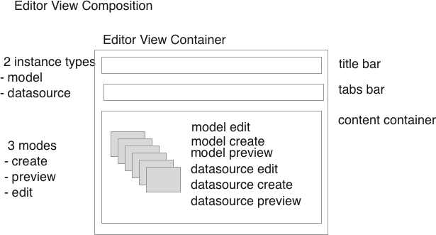

typical navigation event:
-
- I as a user click on something to indicate I want to do something to some instance of something
-
- UI request event
-
-- instance (model/datasource)
-
-- type of request (mode)
-
- call the Editor View Component
-
- set the style and content of title bar
-
- set the list of items for the tabs bar (including mods for context)
-
- fetch the relevant content component
-
-- create
-
-- preview
-
-- edit